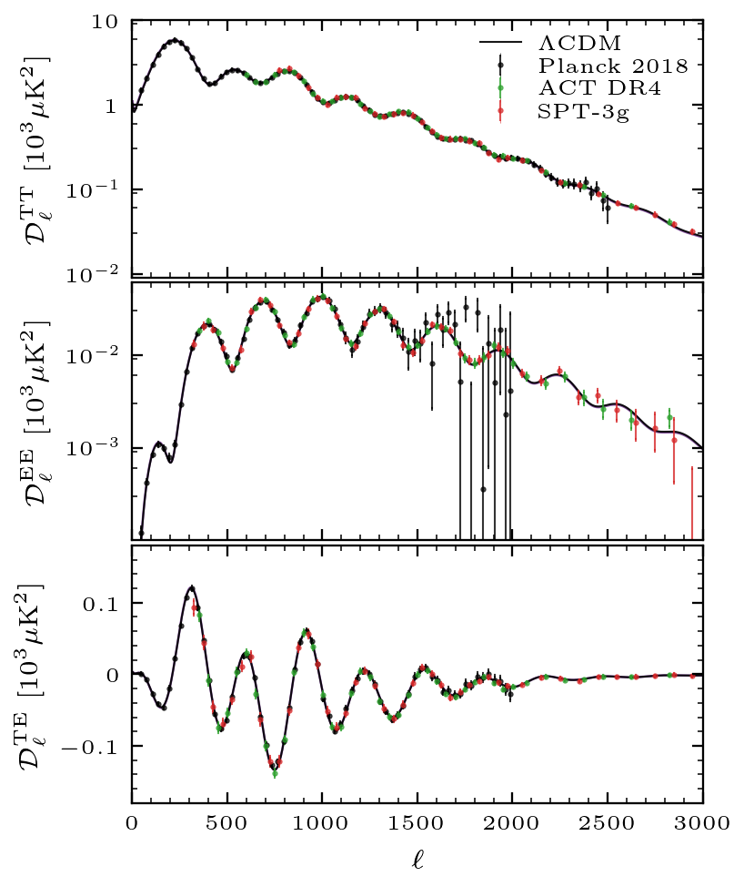

Primordial Power Spectrum
The Primordial Power Spectrum shows the size of the fluctuations in the CMB as a function of angular scale, constructed from anisotropy data. It describes the initial perturbations in the universe which eventually grew into the cosmic structures we observe today.

